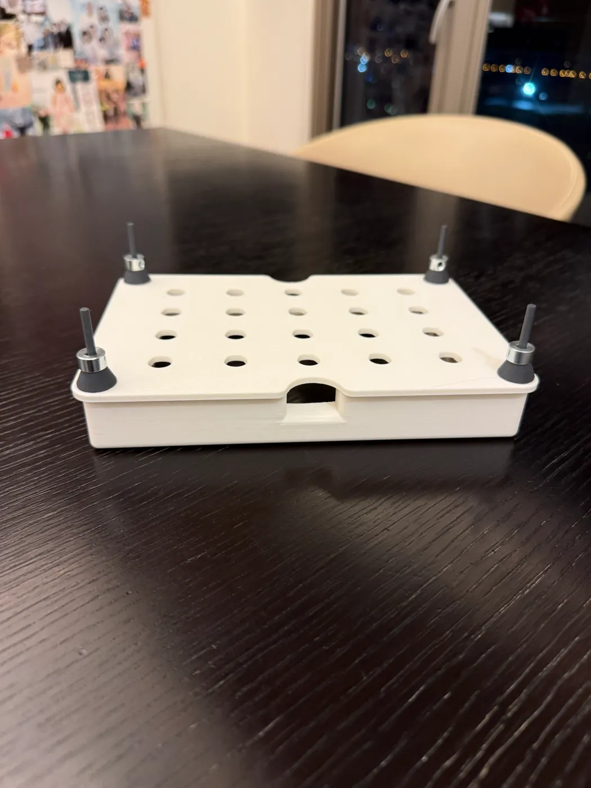
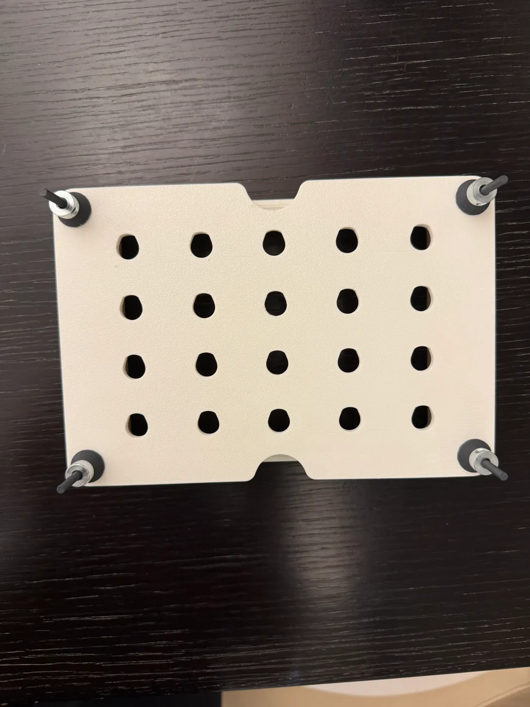
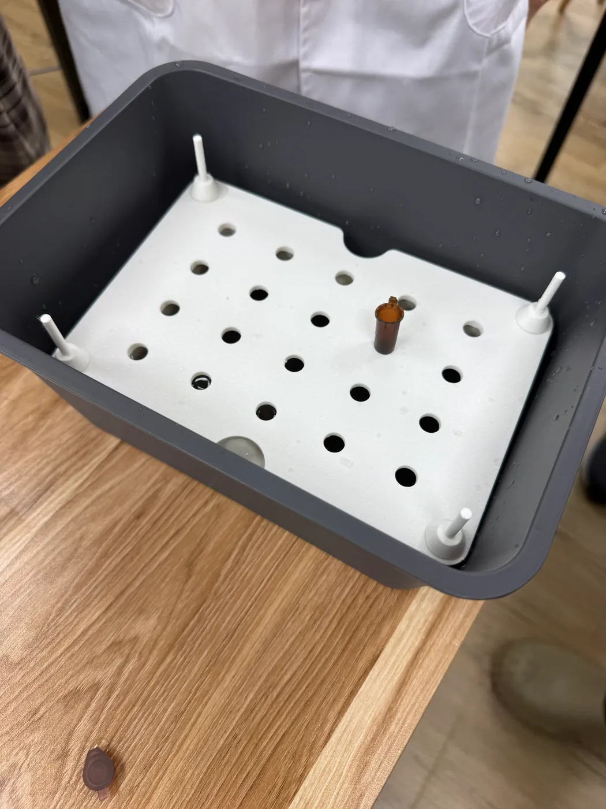

Hydroponics
Floating Plate
A printed floating plate for Arabidopsis in liquid medium: thirteen seed holders on a fixed pitch, carried by sealed air built into its own frame.
Last updated 28 September 2026
Purpose
2.1 Standardization of Hydroponics for Labs
Labs that grow Arabidopsis in liquid medium tend to improvise the setup. A piece of foam cut to size, a mesh taped over a container, or a fixed plate sitting above a reservoir. None of it is repeatable between labs, or even between runs in the same lab.
Our plate floats on the medium, so the seedlings stay at the same depth no matter how much liquid is left. Everything prints on a normal FDM printer, so another lab can download the files and run the same geometry we did. Same depth, same spacing, same conditions, whoever is running it.
2.2 The Problem With Fixed Plates
Our first version was a fixed plate sitting over a liquid chamber. The plate held the seedlings at a set height and the medium sat underneath, so the level had to be set by hand before every run.
The level turned out to be a delicate balance. It has to sit just under the growing platform and as high as we can get it. Too low and the roots lose contact, too high and the platform floods. The window between those two failures is narrow.
It also does not stay where you put it. The plants drink and the medium evaporates, so a level that was right at the start of a run is wrong by the end of it. Someone has to watch the reservoir and top it up, and every top-up is a chance for conditions to drift between replicates. That is what we set out to remove.
2.3 Outreach Story: Prof. Cheng Mei Jun
To be written by the team members who went to the outreach, with photos of the visit.
Design Requirements
- Hold root depth constant for the whole run, with no manual topping up
- Carry 13 Arabidopsis seedlings
- Float on the medium under its own buoyancy, with no separate float attached
- Print in PLA on a standard FDM machine
- Assemble with no adhesives and no fasteners
Buoyancy Design
The plate floats on sealed air volume built into its own frame. There is no foam block and nothing strapped underneath. The pontoon sections run hollow with a teardrop cross-section and print at 15% gyroid infill, which keeps the walls light while leaving enough internal structure to hold their shape.
Sizing them is a displacement problem. The plate has to displace its own mass plus the seedlings plus whatever water the printed part takes on, and it has to do that while sitting at the freeboard that puts the roots in the medium and the crowns above it. We ran this calculation again every time the design changed, because any change to wall thickness or footprint moves the mass and the displacement at the same time.
One worked case shows the sensitivity. At a plate mass of roughly 180 g, the pontoons came up short and needed about 0.65 cubic inches of extra volume each to sit at the target freeboard.
The four corner poles on the first floating version were the safety margin on this. They take washers as ballast in case the plate rides too high. Later iterations tuned the volume closely enough that the poles came off.
Geometry and Mechanical Design
- Teardrop cross-section on the pontoon tubes, which prints without support and sheds the overhang cleanly
- The frame is the flotation. Sealed air chambers are part of the structure, so there is nothing to glue or strap on and nothing to come loose in the medium
- Wave and puzzle lobe keys join the sections. They locate more positively than a plain dovetail and resist being pulled apart in the plane of the plate
- Clip-in handles, so the plate lifts out of the reservoir without anyone touching the seedlings
- Corner poles for washer ballast on the first floating version, removed once the buoyancy was tuned
The CAD render is the walkthrough at the top of this page, driven from the same STLs the part is printed from. The table below was measured off those files on a 0.1 mm grid.
| Feature | Measurement |
|---|---|
| Plate envelope | 117.50 × 92.50 × 25.08 mm |
| Top slab | 3.175 mm thick |
| Bores | 13 × ∅11.26 mm on a 21.59 mm pitch, staggered 4, 5, 4, outer rows half a pitch off the middle |
| Air chambers | Two, one per long side. Each internal void 113.80 × 6.90 × 20.32 mm, capped underneath by a 1.7 mm skin. 28.7 cm³ the pair. |
| Chamber profile | Each is a bracket: a run the length of its long side, hooking inward at both ends and tapering from x −42.25 at y −34 to x −50.25 at y −18.4, where it stops short of the handle pocket |
| Below the centre | Nothing. The middle of the plate is flat slab |
| Handles | 12.34 × 25.40 × 32.89 mm, one at each end, clipped into moulded slots |
| Seed holder | ∅13.19 mm flange over a tapered basket, 12.07 mm tall. Modelled once, placed thirteen times |
Design Evolution
Fixed plate. A plate held at a set height over a liquid chamber. It worked, but only for as long as someone kept the level correct, which is covered in section 2.2.
First floating version, started 6/25. We moved the flotation into the frame and let the plate ride on the surface. Corner poles carried washers so we could trim the freeboard after printing rather than reprinting the whole part.



Current version. Smaller footprint, clip-in handles, and buoyancy tuned closely enough that the ballast poles were no longer doing anything. This is the version in section 8.
Full DBTL Cycles
The plate's full design, build, test and learn cycles are written up with the plant experiments on the Plant page.
Reproduction
8.1 Bill of Materials
| Component | Part number / spec | Qty | Unit cost | Total |
|---|---|---|---|---|
| Floating plate | Printed, 63.60 cm³ solid. Filament , infill | 1 | ||
| Handle | Printed, 2.76 cm³ solid each. Filament , infill | 2 | ||
| Seed holder | Printed, 0.43 cm³ solid each. Filament , infill | 13 | ||
| Total | 74.71 cm³ solid across all pieces | 16 |
Solid volume is the enclosed volume of each mesh, not the filament a printer will use, which depends on wall count, infill and purge.
8.2 Print Settings
- PLA on a standard FDM printer
- 15% gyroid infill in the pontoon sections
- No supports needed
8.3 Assembly
In progress.
8.4 Setting Up a Run
In progress.
Design Files
Four STLs make the whole assembly: the floating plate, a left and a right handle, and one seed holder. They are kept in the project repository; dimensioned drawings and print instructions per part are still to be added.